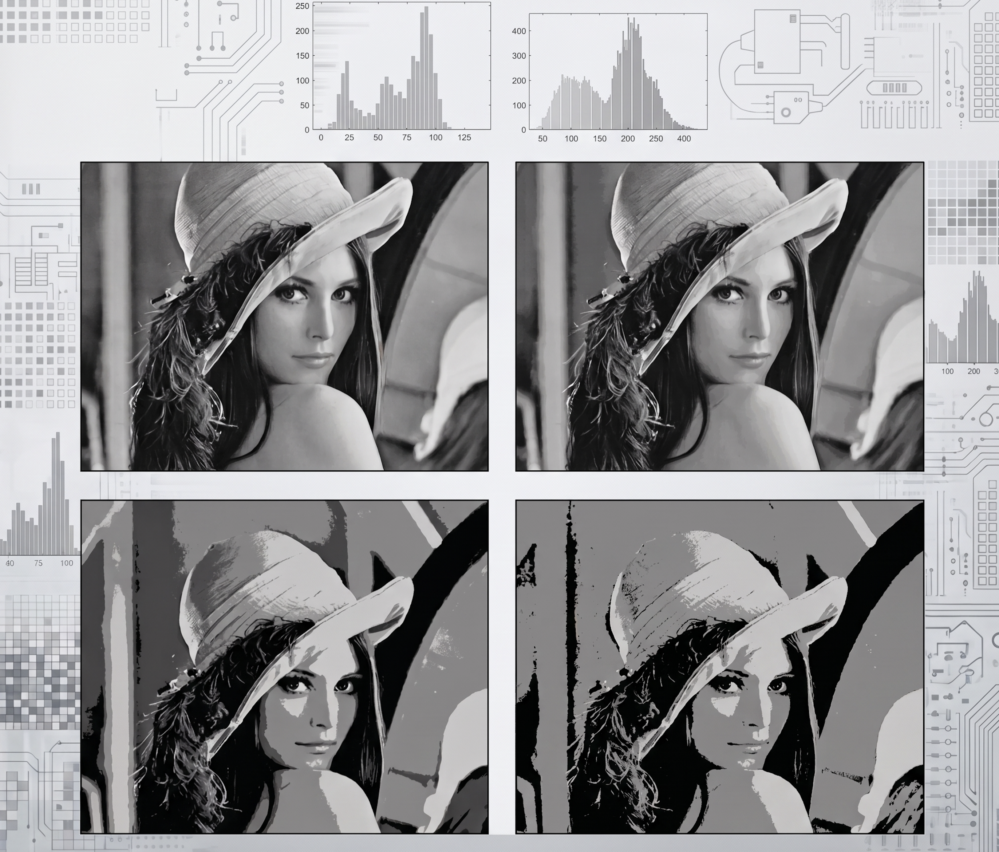

Traitement d’Images
Master 2 Informatique
Une introduction au traitement d’images
Bienvenue dans le support du cours de Traitement d’Images, destiné aux étudiants de 2ème Master en Informatique de l’ISIB-HE2B.

L’objectif de ce cours est de faire le pont entre les fondements théoriques de la vision par ordinateur et le déploiement d’algorithmes robustes dans un contexte industriel (contrôle qualité, vision robotique, mesure de pièces).
Approche Pédagogique
Ce support suit la philosophie du Docs as Code. Il ne s’agit pas d’un simple recueil de diapositives, mais d’une documentation technique vivante comprenant :
- Le cadre théorique : Les principes mathématiques et algorithmiques.
- Des exercices de réflexion : Pour aller plus loin, avec les solutions commentées.
- L’implémentation Python : Du code basé sur les standards de l’industrie (
OpenCV,NumPy, …). - Des exercices de base : Une application modulaire en code Python des principes mathématiques et algorithmiques.
- Des Use Cases : Des cas concrets avec des jeux de données.
Environnement de Travail
Pour les séances d’exercices et la réalisation de vos projets, vous aurez besoin de configurer votre environnement local.
Assurez-vous de disposer des éléments suivants sur votre machine : 1. Python 3.10+ avec un environnement virtuel configuré (venv ou conda). 2. Les bibliothèques listées dans le requirements.txt du cours (fourni au premier cours). 3. VS Code avec l’extension Jupyter pour exécuter les notebooks fournis. 4. Un clone du repo https://github.com/RudiGiot/cours_traitement_images.git pour pouvoir agrémenter mon cours avec vos notes et vos codes.